Uygulama İçerisindeki Bölümler
Ürünün yapısı seçildi
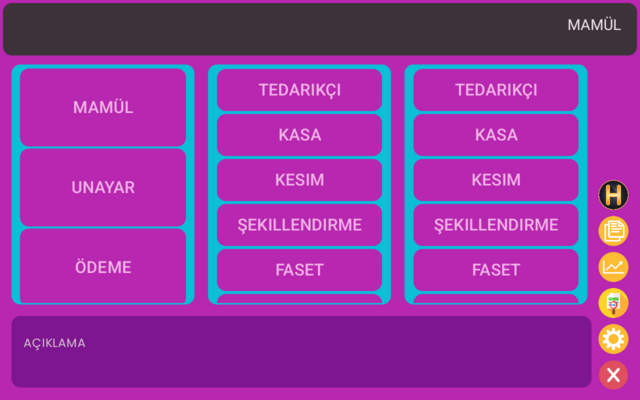Ürün miktarı belirlendi.
Ürün cinsi belirlendi.
Ürünün nereden geldiği seçildi.
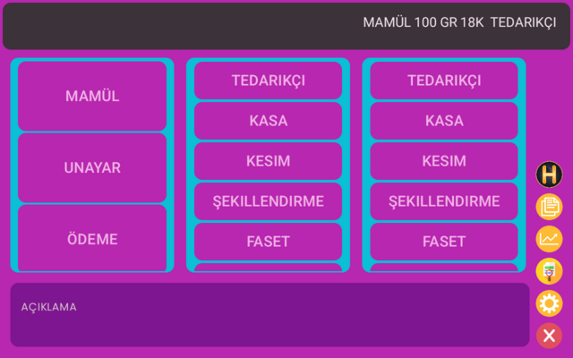Ürünün nereye gittiği seçildi.
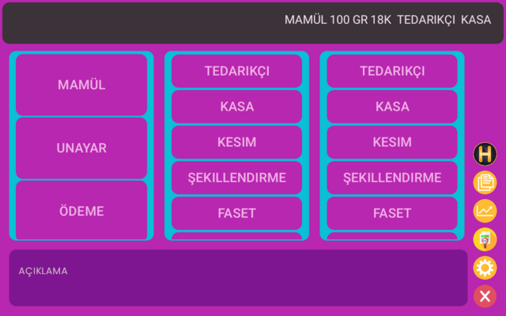"=" butonuna tıklanma işlemi yapınız.
Fatura işlem sonucu
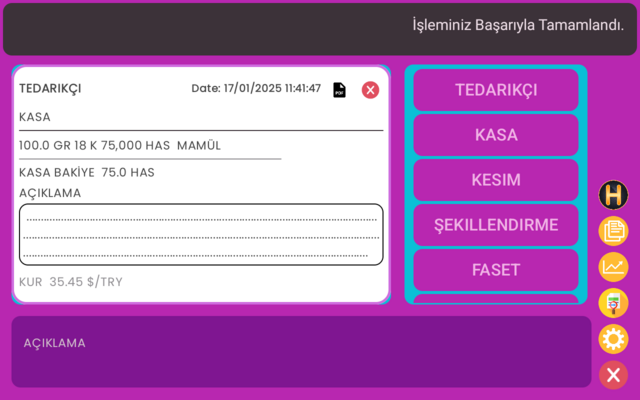
Üzerine tıklayınız.
Fatura işlem sonucu PDF çevirme işlemi
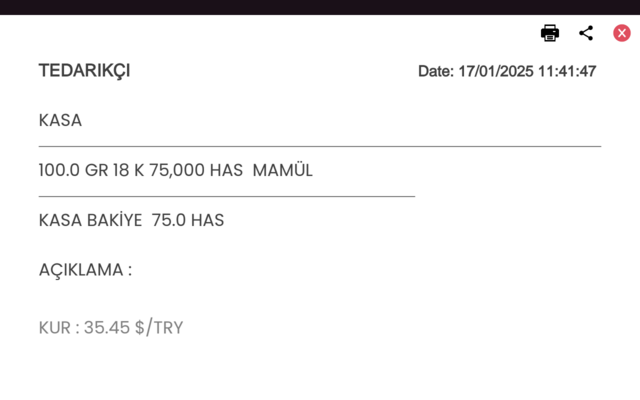
Yazdırabilir ve

QR ile paylaşabilir.
Resme tıklayınız ve Hamperlist'e ulaştınız.
Örnek Hamperlist
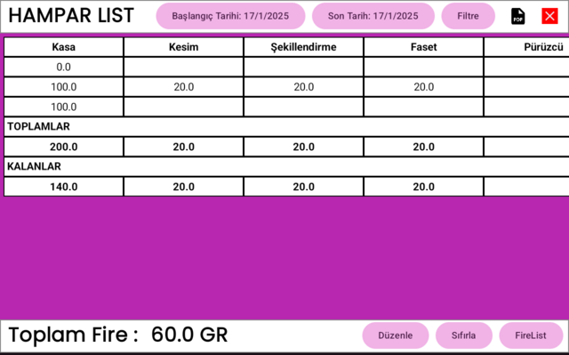
Buna tıkladığınızda Hamperlist PDF dönüşecektir.
Hamperlist PDF görünümüdür.
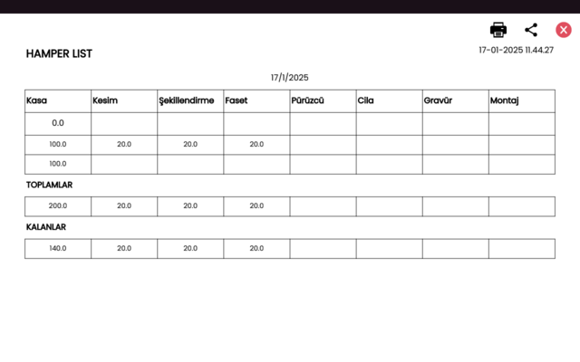Düzenle butonuna basarak yeni fire değeri girilebilir.
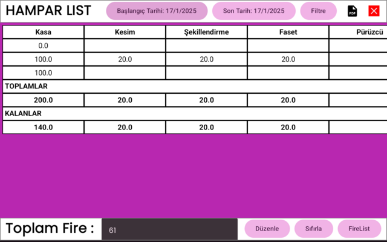Sıfırla butonuna basarak fire sıfırlancak.
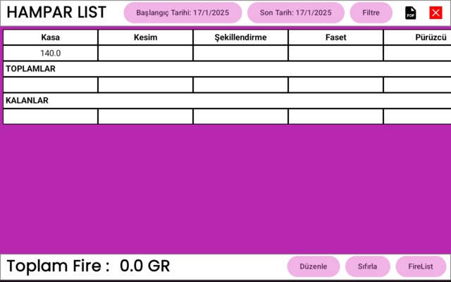Firelist butonuna basarak listeye ulaşabilirsiniz .
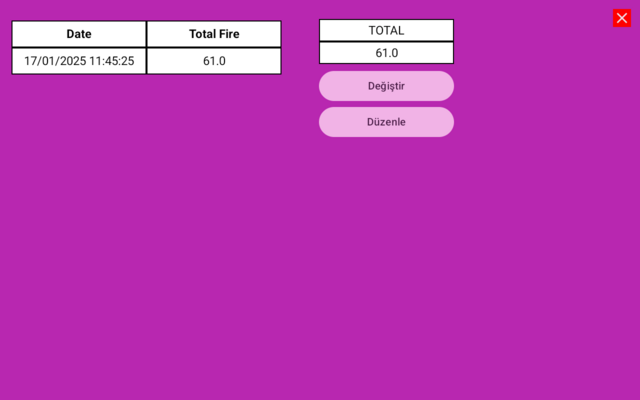Değiştir butonuna basarak yeni fire değeri girilebilir.
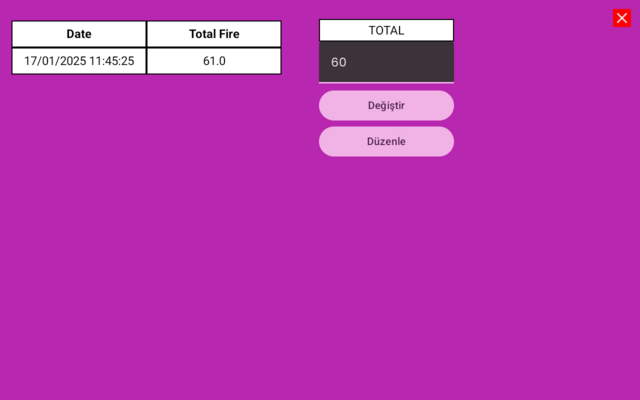Düzenle butonuna basarak yeni fire değeri kaydedilecektir.
Buna tıkladığınızda tüm dökümanlara ulaşabilirsiniz.
Döküman Görünüm
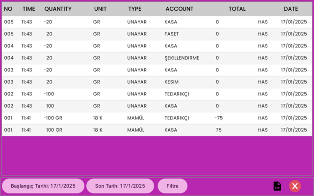Tarih filtreleme kısmı
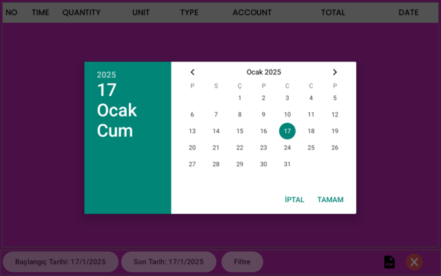
Buna tıkladığınızda PDF çevrilecektir.
Döküman PDF görünümü
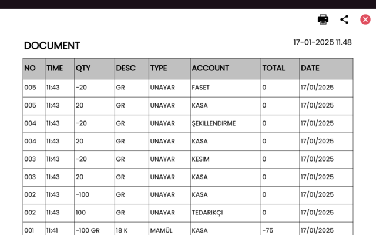Buna tıklandığında grafik tablosuna erişim sağlanacaktır.
Grafik sayfası örnek görünüm
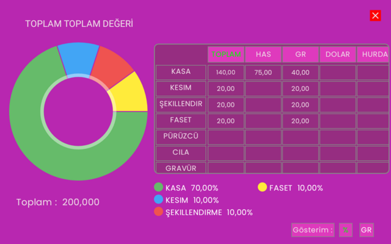Üst başlıklara tıklanarak istenen türün değerleri ile grafik hazırlanabilir.
Örnek seçilmiş tür grafiği
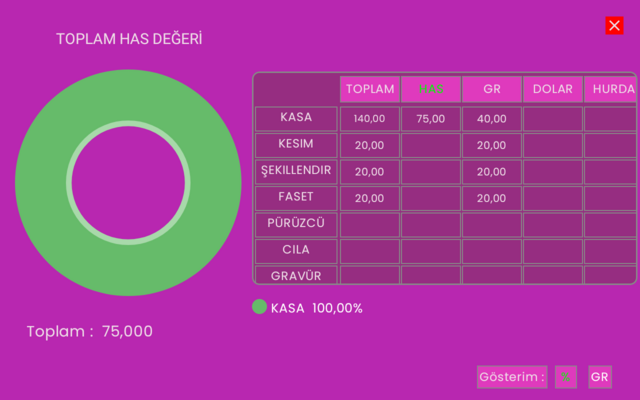Görsele tıklayarak istenilen hesabın bakiyesini görebilirsiniz.
Örnek hesap seçim yeri
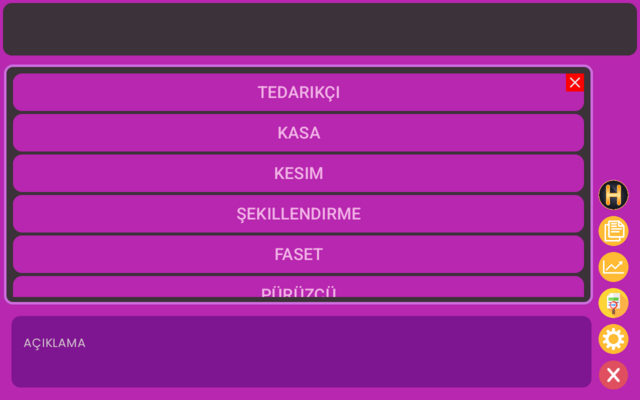Kasa hesabı seçildi.
Örnek kasa hesap görünümü
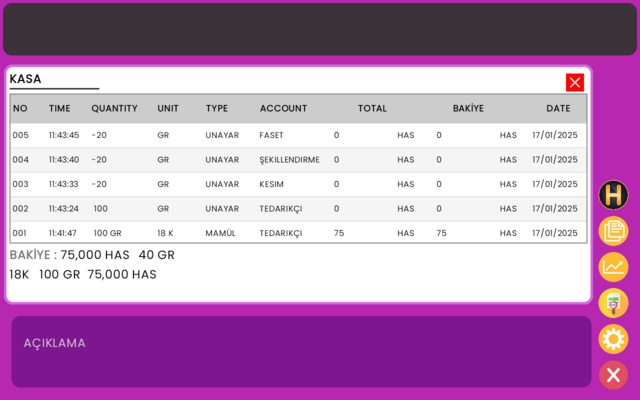Görsele tıklayarak geçerli sürümü görebilirsiniz.
Geçerli olan sürüm görseli
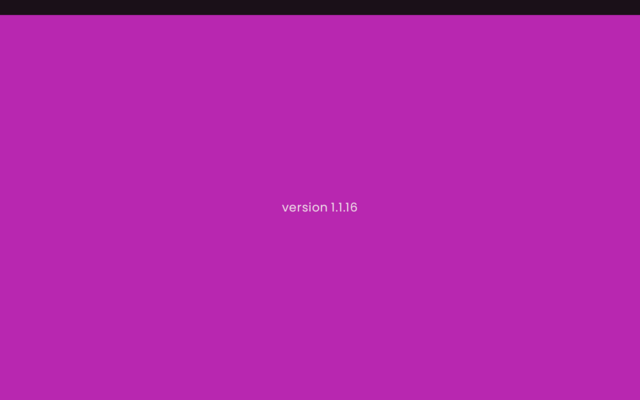